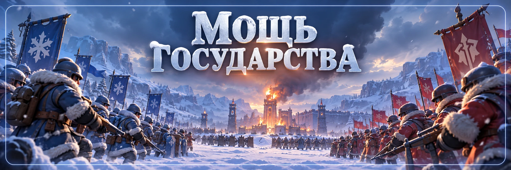

Мощь государства
Автор - Sova
«Мощь государства» — главное межгосударственное событие, которое игроки обычно называют SvS / State vs State.
Два государства становятся соперниками и проходят полный цикл: подбор соперника → подготовка → межгосударственная битва → восстановление войск.
На сайте подробная тактика разделена на две отдельные страницы: Подготовка к SvS и SvS: боевая фаза.
Показать весь цикл SvS целиком и не дублировать уже готовые подробные гайды.
4 ОСНОВНЫЕ ФАЗЫ
Полный цикл состоит из четырёх частей:
- Подбор соперника.
- Подготовка.
- Боевая фаза.
- Восстановление войск.
Каждая часть влияет на общий результат события.
1. ПОДБОР СОПЕРНИКА
Подбор обычно занимает около 2 дней.
Как правило, в субботу начинается подбор, а в воскресенье становится известен соперник.
После этого можно изучить государство противника и заранее готовиться к будущему противостоянию.
Не используем как правило сомнительные советы вроде снятия снаряжения, сброса героев или искусственного уменьшения отображаемой мощности. Надёжного подтверждения, что это даст более слабого соперника, нет.
2. ПОДГОТОВКА К SvS
После определения соперника начинается подготовительная фаза.
Она длится примерно 5 дней + 10 часов.
Государства соревнуются по очкам развития. В разные дни могут учитываться:
- Огненные кристаллы;
- Очищенные огненные кристаллы;
- осколки Огненных кристаллов;
- строительство;
- исследования;
- обучение и повышение войск;
- развитие героев;
- питомцы;
- снаряжение губернатора;
- талисманы;
- Камни эссенции;
- Виджеты;
- Мифрил;
- развитие Экспертов;
- ускорения.
 Огненные кристаллы;
Огненные кристаллы; Камни эссенции;
Камни эссенции; Мифрил;
Мифрил;ГЛАВНОЕ В ПОДГОТОВКЕ
Не тратьте редкие материалы сразу после получения.
Для SvS особенно выгодно заранее копить:
- Огненные кристаллы;
- ускорения;
- фрагменты героев;
- материалы питомцев;
- материалы губернатора;
- Камни эссенции;
- Виджеты;
- Мифрил;
- материалы Экспертов.
Затем используйте их именно в тот день, когда они дают очки.
Все дни, материалы и стратегия накопления уже разобраны на странице «Подготовка к SvS».
Перед каждой тратой всё равно проверяем текущие задания 58 государства.
ПОДГОТОВКА — ОБЩИЙ РЕЗУЛЬТАТ ГОСУДАРСТВА
В подготовительной фазе важен суммарный результат всего государства.
Если каждый игрок тратит накопления случайно, государство теряет потенциальные очки. Крупные траты выгоднее координировать и привязывать к нужному дню.
3. БОЕВАЯ ФАЗА
После подготовки начинается межгосударственная боевая стадия.
Официальное начало основной боевой фазы — около 10:00 UTC.
Полная боевая фаза длится 12 часов:
- Первые 2 часа — межгосударственные перемещения и PvP.
- Следующие 6 часов — основная битва за Солнечный замок.
- Последние 4 часа — снова межгосударственные перемещения и PvP.
СОЛНЕЧНЫЙ ЗАМОК
Во время шестичасовой замковой части альянсы государства координируют:
- рейды;
- Солнечный замок;
- четыре башни;
- подкрепления;
- телепорты;
- лечение.
Не путайте правила SvS с обычной внутренней «Битвой за замок»: у них разные таймеры и условия.
Замок, башни, рейды, переход между государствами, PvP, Медпункт и восстановление уже подробно разобраны на странице «SvS: боевая фаза».
ПОСЛЕДНИЕ 4 ЧАСА ТОЖЕ ВАЖНЫ
Окончание битвы за Солнечный замок не означает окончание всей боевой фазы.
Межгосударственные переходы и PvP продолжаются ещё около 4 часов.
Если больше не участвуете:
- снова поставьте щит;
- проверьте Медпункт;
- верните уязвимые марши;
- не оставляйте город открытым.
ОЧКИ ЗА PvP
Не каждый противник подходит для получения очков.
Если разница уровня между игроками слишком большая, очки могут не начисляться. В текущей механике используется ограничение примерно в 3 уровня.
Перед атакой проверяйте, считается ли цель подходящей для очков.
ПЕРЕХОД В ДРУГОЕ ГОСУДАРСТВО
Во время боевой фазы можно переходить на территорию государства-соперника.
При переходе:
- некоторые уже полученные бонусы объектов продолжают действовать;
- Автоохота доступна;
- Авторейд недоступен.
Рейды поэтому организуются вручную.
ЕСЛИ НЕ УЧАСТВУЕТЕ В PvP
В день боя ставьте щит, особенно если долго не сможете войти в игру.
Следите за временем его окончания и не оставляйте город открытым после завершения замковой части.
4. ВОССТАНОВЛЕНИЕ ВОЙСК
После боевой фазы начинается восстановление подходящих потерянных войск.
Можно вернуть до 90% подходящих потерь:
- 30% возвращает система;
- до 10% можно восстановить с помощью алмазов;
- до 50% — через помощь союзников.
 до 10% можно восстановить с помощью алмазов;
до 10% можно восстановить с помощью алмазов;После PvP обязательно проверьте собственное восстановление и помогите союзникам.
Восстановление применяется только к войскам, подходящим под правила системы. Итог смотрим непосредственно во вкладке восстановления.
ПРЕЗИДЕНТСТВО
Итог зависит от результатов подготовки и борьбы за Солнечный замок.
Возможны разные ситуации в зависимости от того, кто выиграл подготовку и кто контролировал Замок. Финальный результат смотрим в текущем окне SvS.
ОБЫЧНАЯ БИТВА ЗА ЗАМОК И SvS — НЕ ОДНО И ТО ЖЕ
На сайте есть отдельная страница «Битва за замок». Она относится к внутренней битве государства.
«Мощь государства / SvS» — межгосударственное событие. У него отличаются расписание, переходы между государствами, восстановление войск и правила замковой части.
НЕ ПУТАЙТЕ С ПЕРЕНОСОМ ГОСУДАРСТВА
Результат SvS не определяет напрямую показатель мощности государства для системы переноса.
Победа или поражение в одном SvS не делает государство автоматически «сильным» или «обычным» для переноса.
ЧТО ДЕЛАТЬ МЕЖДУ SvS
Готовиться к следующему SvS выгоднее сразу после окончания текущего.
Снова начинайте копить:
- Огненные кристаллы;
- ускорения;
- фрагменты;
- материалы питомцев;
- материалы губернатора;
- Камни эссенции;
- Виджеты;
- Мифрил;
- материалы Экспертов.
ЧТО ДЕЛАТЬ ИГРОКУ
- До SvS копить материалы и следить за объявлениями государства.
- Во время подготовки использовать ресурсы в правильный день.
- Перед боем освободить Медпункт, вернуть марши и подготовить телепорты.
- Если не участвуете, заранее поставить щит.
- После боя пройти восстановление и помочь союзникам.
- Затем снова начать копить к следующему циклу.
ЧТО ДЕЛАТЬ R4/R5
- Координировать подготовку и давать понятные задания по дням.
- Не заставлять участников бессмысленно тратить редкие материалы.
- Заранее распределить рейд-лидеров и роли Замка и башен.
- Предупредить неучаствующих о щитах.
- Организовать лечение и напомнить про восстановление войск.
ЧАСТЫЕ ОШИБКИ
- Считать «Мощь государства» отдельным событием от SvS.
- Тратить накопления за день до нужного этапа подготовки.
- Пытаться манипулировать подбором соперника неподтверждёнными способами.
- Не подготовить Медпункт к субботе.
- Считать окончание битвы за Замок окончанием всей боевой фазы.
- Оставить город без щита после Замка.
- Атаковать неподходящего по уровню игрока и ожидать очки.
- Пропустить восстановление войск.
- Путать правила обычного Замка и SvS.
- Считать результат SvS показателем мощности для Переноса государства.
«Мощь государства» = SvS.
Подбор соперника занимает примерно 2 дня.
Подготовка длится около 5 дней + 10 часов.
Основная боевая фаза начинается в субботу около 10:00 UTC.
Полная боевая фаза длится 12 часов: 2 часа PvP → 6 часов Солнечного замка → 4 часа PvP.
После боя можно восстановить до 90% подходящих потерь.
Развитие подробно смотрим в «Подготовке к SvS».
Войну подробно смотрим в «SvS: боевая фаза».
Главный принцип: SvS выигрывается не за один субботний бой. Государство сначала копит, затем правильно проходит подготовку, организованно проводит битву и только после этого восстанавливает армию.